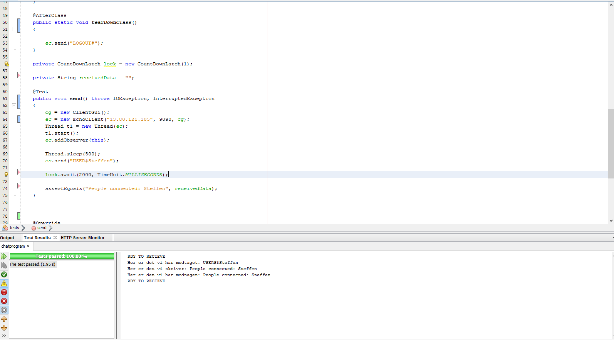

Vi har i dette projekt lavet lige meget, vi har dog delt os op og fokuseret på forskellige opgaver.
Sebastian: Sebastian har primært arbejdet på GUI-klassen, samt websiden derudover har han haft fingerne i mange forskellige klasser.
Steffen: Steffen har primært fokuseret på serveren, clientHandler, client og test.
Kasper: Kasper har, ligesom Steffen, primært fokuseret på serveren, clientHandler, client og test.
Her er et link til vores gitHub repository til chatprogrammet (til cloning: https://github.com/mrlefort/chatprogram1.git).
Her er et link til repository til denne website. (clone link: https://github.com/kasperpagh/Ca1ChatServerWeb.git)
Bemærk at projektet indeholder både client-side og server-side, der er i dist dog bash scripts
til at starte både server eller gui. Default main metoden for hele projektet er i GUI, så eksekverer du blot JARfilen, åbnes GUI (dvs. client delen).
Her er et billed af vores test. Tester til serveren på azure: 